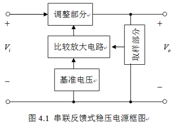
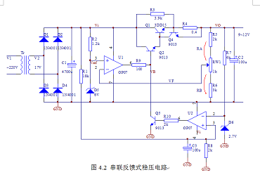
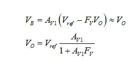
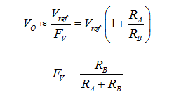
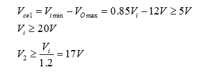
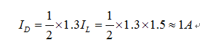
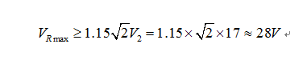
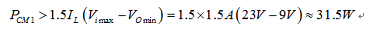

通过一个线性稳压电源的设计，初步学习模拟系统的设计方法。
设计一线性直流稳压电源，电压变化范围±15%，具体指标要求如下：
①输出电压的可调范围：+9~+12V（上下相差3V）；
②最大输出电流：IL≥1.5A（1~2A）；
③稳压系数：Sr≤0.01%（0.02~0.1）；
④电源内阻：RO≤0.01Ω（0.02~0.05）；
⑤纹波输出电压（峰-峰）：VPP≤5mV（10mV）；
⑥具有过流及短路保护功能，当负载电流为1.2 IL时保护功能工作。
直流稳压电源一般是由交流电源供电，经整流、滤波、稳压三个 基本过程，最终输出一定技术指标要求的直流电。其中稳压电路大体可以 分为调整部分、取样部分、比较放大电路、基准电压电路等。方框图如图4.1所示。
比较放大电路时串联稳压电源的重要环节，是提高稳压性能的关键，放大倍数越 高，稳压效果越好。运算放大器开环放大倍数大，作为比较放大环节对提高稳压性能更有利。
由于设计要求指标不高，结构不需太复杂，力求简单明了，尽量选用通用、质量可靠的元器件。初步选定电路如图4.2所示。
其中变压器Tr将220V交流市电降压为V2，D1~D4组成桥式整流电路，C1组成电容滤波电路，复合管Q1、Q2组成调整电路， R5、RW1、R6组成误差取样电路，R2、D5组成基准电压电路，U1组成误差放大电路 ，Q4、R4组成过流保护电路，R7、D6、U2、R10、Q5、R1、C3、R8组成短路保护电路。
其稳压过程是：VO↑→VF↑→（Vref- VF）↓→VB↓↓→VO↓↓。
从反馈角度来看，稳压电源属于电压负反馈，由于调整管Q1、Q2工作在射极输出器状态，因此有
式中 近似为运放的开环增益，在深度负反馈条件下 ，则
从公式2看出，输出电压VO与Vref成正比，与FV成反比，二者确定后输出就稳定了。
由于稳压是依靠Vref- VF的差值来实现的，必须有偏差才能调整，所以输出电压VO不可能绝对稳定，稳压电路属于有差闭环系统。
1、变压器次级电压的确定
从图4.2看出，输入电压Vi=Vce1+VO，为了保证调整管Q1工作在放大区，一 般Vce1=3~8V。根据设计要求，当电网电压下降15%时，Vimin=0.85Vi。此时应保证输出电压能达到最大值VOmax=12V，调整管Q1仍能正常工作，应有：
式中，V2是变压器次级交流电压有效值，这里取V2=17V。（可以根据后续次级电流计算变压器的功率，一般变压器效率考虑η=0.85~0.9，这里从略）
2、整流二极管的确定
选二极管的最大平均电流应大于最大输出电流的1.2~1.5倍，设计要求IL≥1.5A，选用桥式整流电路，因此：
桥式整流电路中二极管承受的最大反相电压 ，考虑电网电压有15%的波动，则有：
据此可以选择通用型整流二极管1N4001为D1~D4，1N4001的参数为IF=1A，VR=50V。若考虑整流的电流冲击问 题，可以适当放宽电流参数，如1N5400系列（3A，50~1200V）。
3、滤波电容C1的选择
电容C1承受的最大反相电压 。综合两项可以选择4700uF/50V的标称电解电容器。
4、调整管Q1、Q2的选择
从最不利的条件考虑，Q1的极限参数应满足下列条件：当负载短路时，电网电压又波动到最高，这是 承受电压最高：Vimax=1.15Vi=1.15×20V=23V。
要求Q1的VBRCEO1>23V，ICM1>1.5IL=2.25A。在正常情况下，调整管功率损耗最大的时刻是电网电压最高，输出电压VO最小的时刻，所以
式中1.5为Q1的工作余度。根据计算，可以选择功率管3DD15A，并加散热 板。3DD15A的极限参数为：VBRCEO≥60V，ICM=5A，PCM=50W，β≥20~80。也可以选择2N3055、2SC3280、T40G30等。
据此选择3DG12A作为推动管Q2，VBRCEO≥60V，ICM=300mA，PCM=700mW，β越大对运放U1影响越小，对稳压效果越有利。三极管C90 13应用普遍，β值、耐压都很高，工程人员都喜欢采用。当然也可以直接选择达林顿管作为Q1 、Q2。